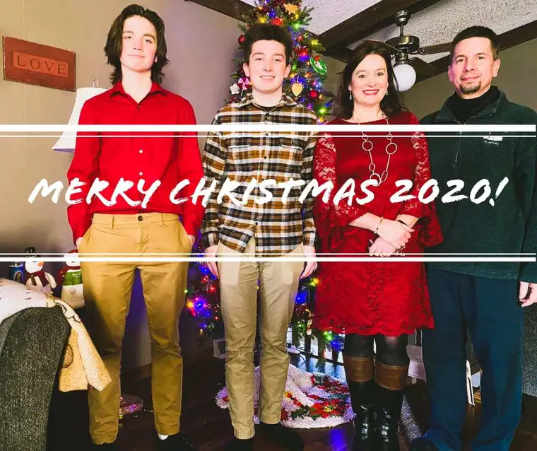
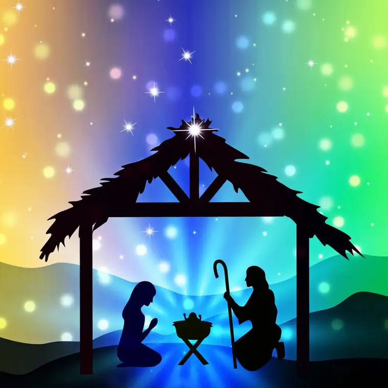
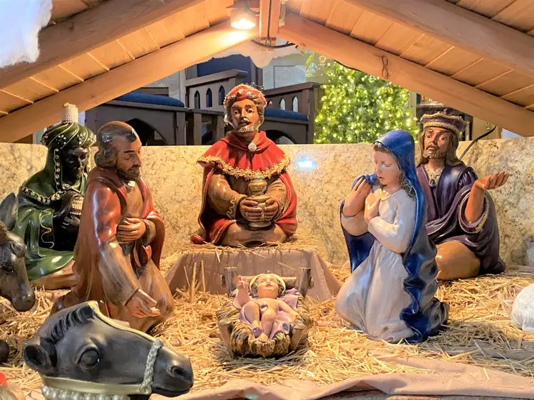
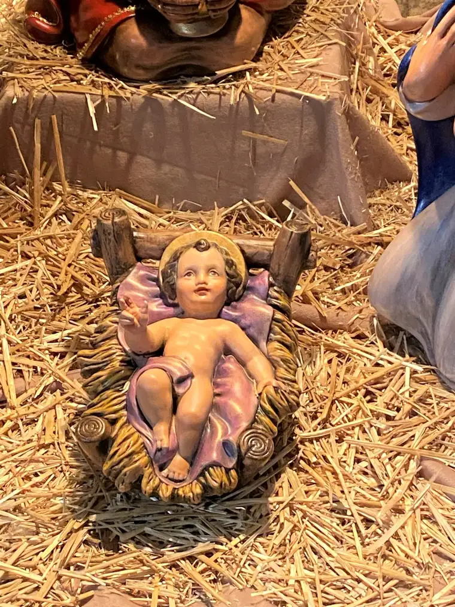
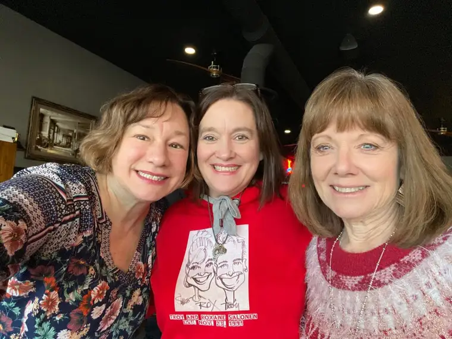
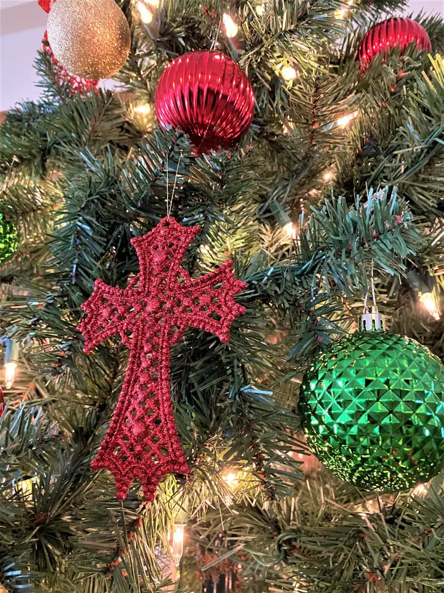

Since 2008, I’ve begun the new year with a word; a word that I have discerned will guide the days ahead. The’ve included: 2008, Awaken; 2009, Healing; 2010, Transition; 2011, Pursue; 2012, Ready; 2013, Joy; 2014, Expectation; 2015, Receive; 2016, Trust; 2017, Hope and Health; 2018, Alive; 2019, Wisdom; and 2020, Family.
I enjoy looking back and seeing how well my year matched my predictive word. And all I can say about my choice for 2020 is: wow. Back in Dec. 2020 when I posted about it, I never could have guessed how prominently important my word, “Family,” would become in short order. Perhaps the wisdom I’d sought to acquire in 2019 came into play as I subconsciously prophesied what would come to mean even more to me than ever, as with so many,this past year. Had I been told then that within a few months’ time, a worldwide pandemic would thrust our family closer together in an unexpected way, I’d have doubted it, I’m sure.

Now, there’s no question. Family is everything. The post I wrote last year surrounding the Holy Family as a model still speaks to my heart, as well as words from four years ago from Monsignor Thomas Richter’s homily during the Feast of the Holy Family Mass at Bismarck’s Cathedral of the Holy Spirit: “The foundation of family is the contemplative gaze…beholding God’s presence was the foundation of how (the holy family) behaved,” he remarked, adding profoundly. “All behavior begins by seeing.”

Though I’m with most who find 2020 as a whole fairly easy to leave behind, I’m wishing to hold onto my word, “Family,” a little longer — and I will. But to be fair, 2021 deserves its very own word, and after deliberating, I’ve chosen the winning guide: “Light.” Or, as is more the case, it has chosen me. I have been more deLIGHTed by the light that has shone this Christmas season, and I want to bring that well into the new year and beyond.

Another strong contender was “Life.” What could be more important in a year following the darkness and death we’ve experienced through Covid-19? A few days ago, a reflection reminded me of the intricate connection of these two words: “I am the light of the world. He who follows me does not walk in the darkness, but will have the light of life.” (John 8:12)
“The light of life.” That’s a phrase worth holding near in this brand-new year.
Mother Elvira Petrozzi, foundress of Comunita Cenacolo, which welcomes the lost and desperate, suggests that Our Blessed Mother Mary most capably, sincerely leads us to the brightest of all lights.

“This…humble, simple, faithful servant…smiles upon us, invites us, welcomes us, and takes us to contemplate the manger, where the splendor of Light is never extinguished,” she writes. “Immersed in this light, we find a life that is truly eternal.”
I think I’ll keep Mary near, too, in this year of 2021, as a way to stay focused on this light of life. For the mother’s love leads her family to light, and Mary’s love leads us all to The Light.

Mother Elvira continues: “Let us thank Mary, our Mother, who leads us to live in that Light because, like every mother, she knows that children are afraid of the dark!”
Indeed, we are! I am not too old to admit that I still would rather have the lights on and know exactly where I’m going. The witch that lived under my bed at age 3 hasn’t completely melted away. Darkness, as we’ve all seen this year, encroaches from all directions in various forms.
But the light of the world still shines, perhaps more brightly than ever! And I want to be part of bringing this light to others; first of all, to my own heart; then, to that of my dear family, whom I love so much; and finally, to others who are living in darkness and need to be shown this bright, warm, illuminative presence — this person, Jesus the Christ.
We have all experienced a great trial in this last year. We will never be the same. I won’t offer a litany of the hardships that have commenced — they are well-documented and ongoing. The Great Grieving that has accompanied us will not dissipate anytime soon. But neither will the Light leave us, and we have much cause for embracing the Joy that comes from grasping for that Light which brings Life — both now and eternally.
I pray that all who come across my reflection today will feel heartened as we end this year of 2020, and reach with me into the Light that God wishes to draw us to through His beautiful, enlightening, peaceful, awe-inspiring love.

“The people who walked in darkness have seen a great light; upon those who lived in a land of gloom a light has shone.” (Isaiah 9:1)

Let us rejoice as we live in the Light of Life in 2021!
Q4U: What is your One Word for 2021, and why?